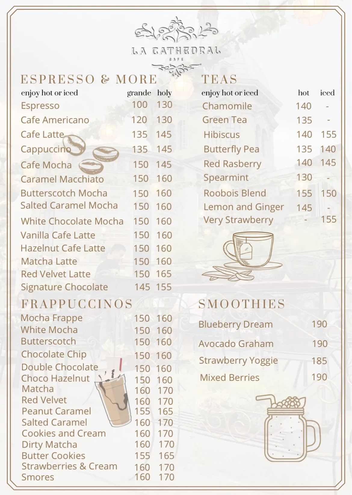
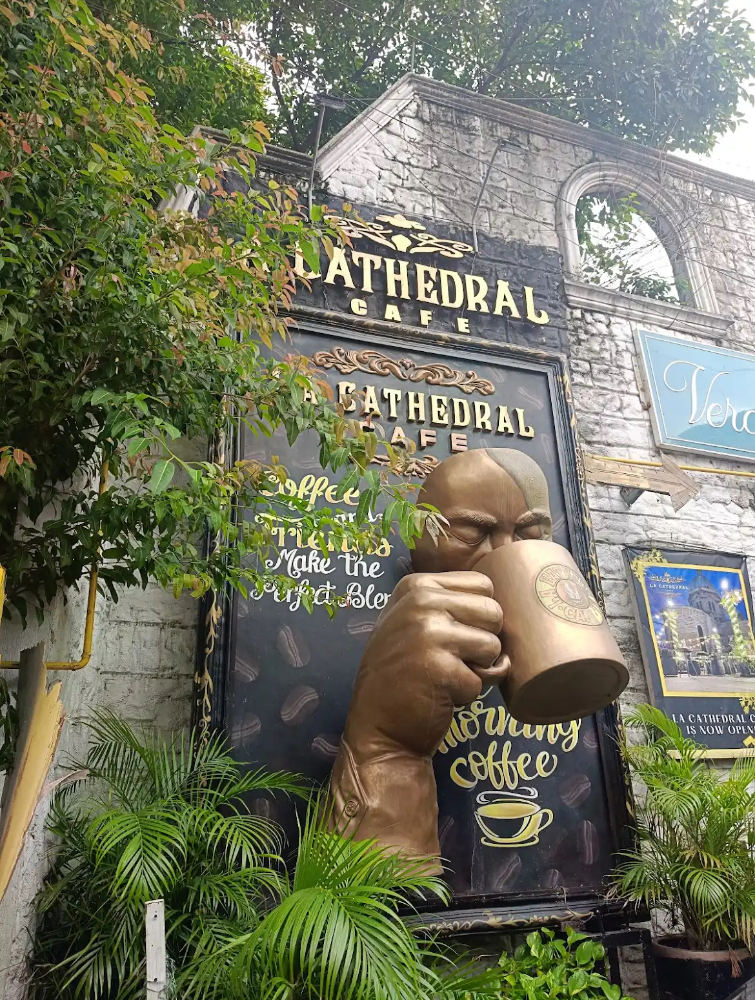
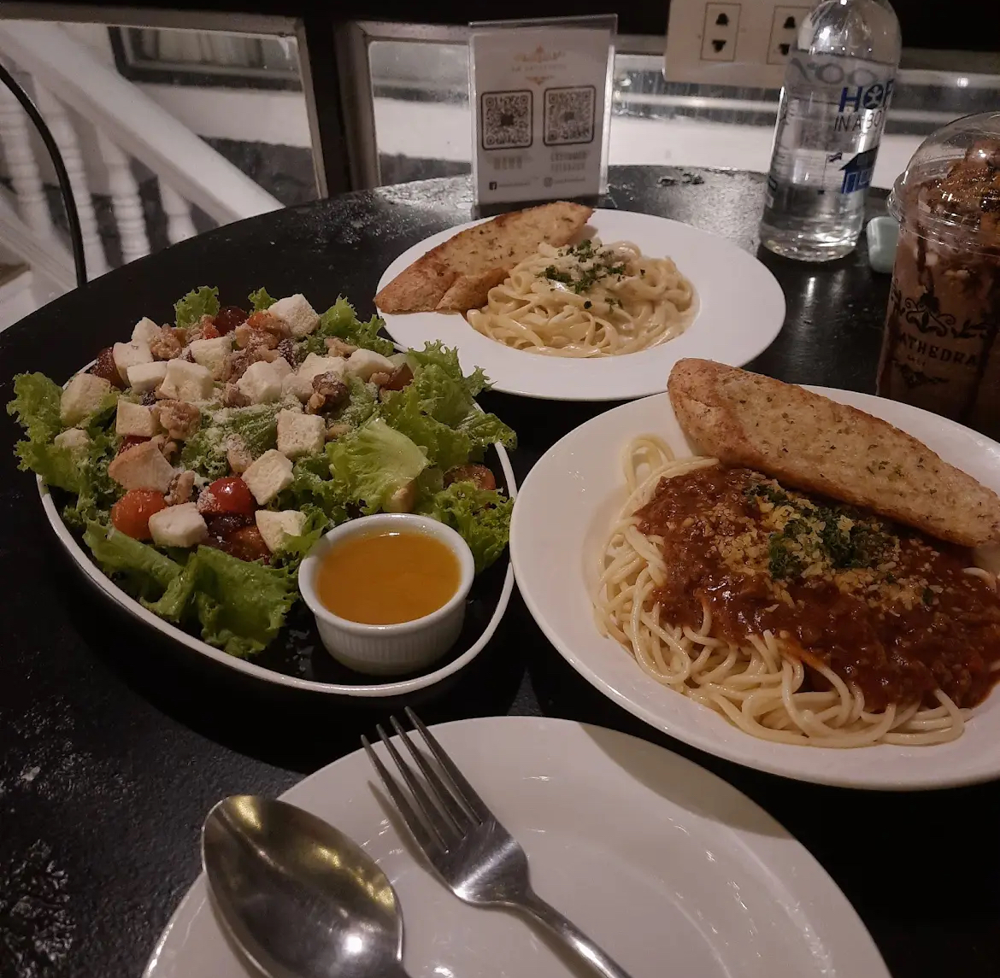
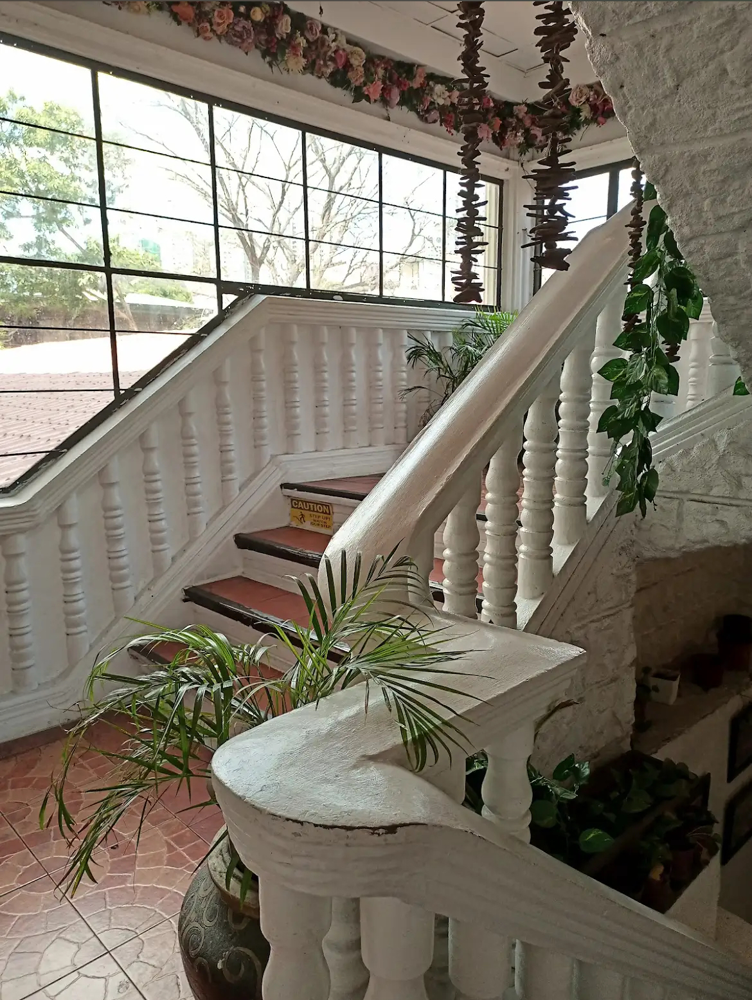
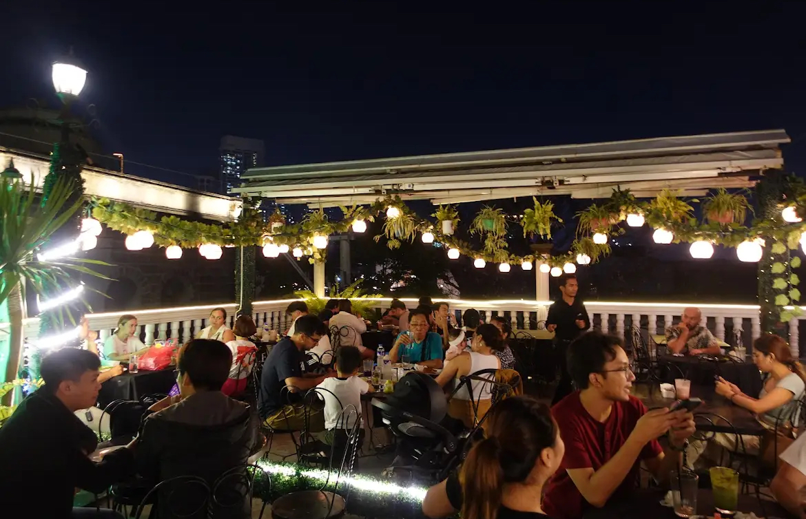

Overview
La Cathedral Café is a charming art deco–inspired café located within the grounds of the historic Manila Cathedral. Its stylish interiors blend vintage design with modern comforts, making it a favorite spot for coffee lovers and history buffs alike.
Renowned for its single-origin brews, handcrafted pastries, and relaxing atmosphere, the café offers a quiet retreat amid the bustling streets of Intramuros.
Photo Gallery






🥠Key Features
- Art Deco Ambiance: Elegant 1930s–era design with stained glass, geometric patterns, and vintage furnishings.
- Specialty Coffee: Single-origin beans roasted in-house, pour-over, and espresso-based drinks.
- Handcrafted Pastries: Freshly baked croissants, tarts, and local dessert twists.
- Indoor & Outdoor Seating: Garden courtyard tables shaded by trees and air-conditioned interior.
- Open Daily: 7 AM to 8 PM, perfect for breakfast meetings or afternoon breaks.
- Wi-Fi & Power Outlets: Reliable connectivity for students and remote workers.
Find It Here
User Reviews
Loading average rating...